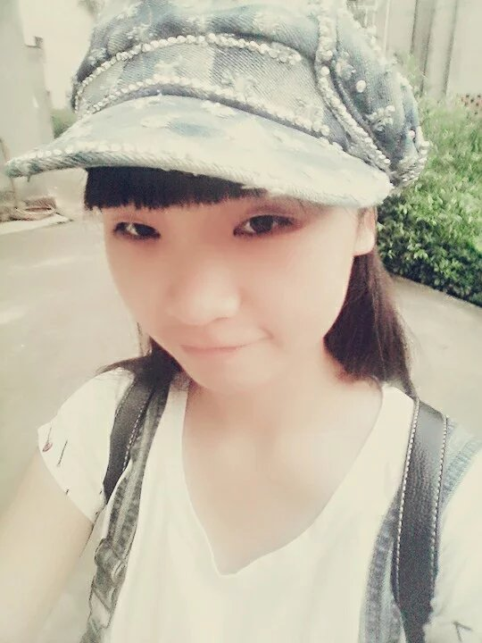
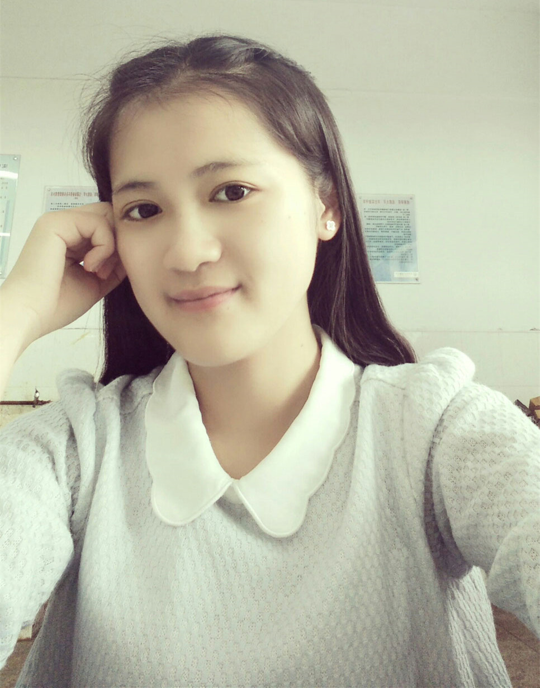
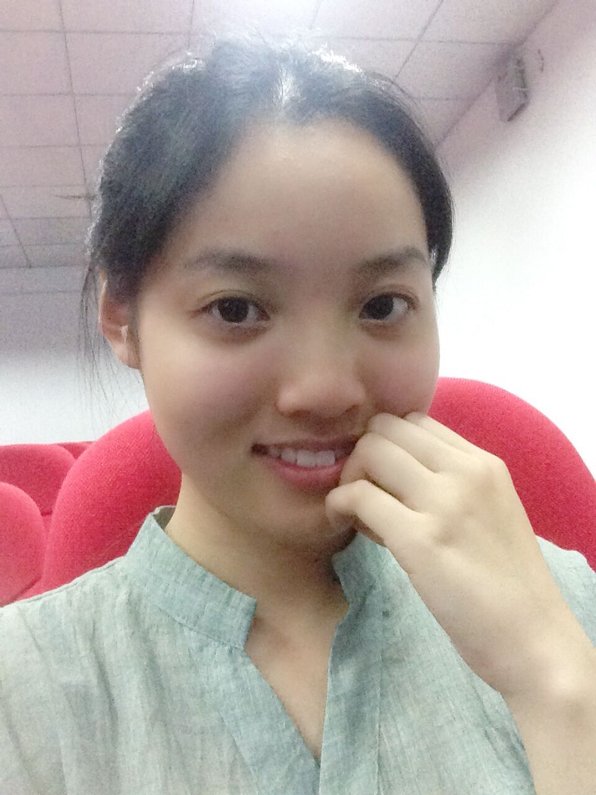
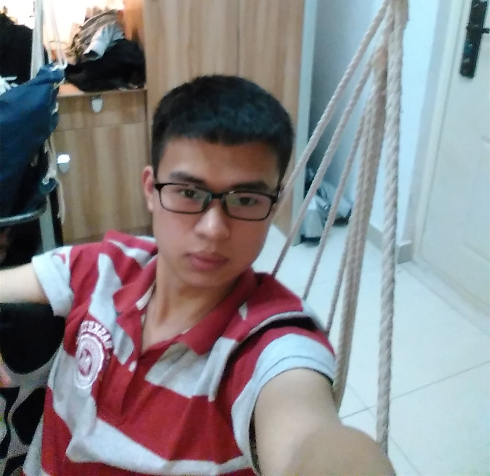
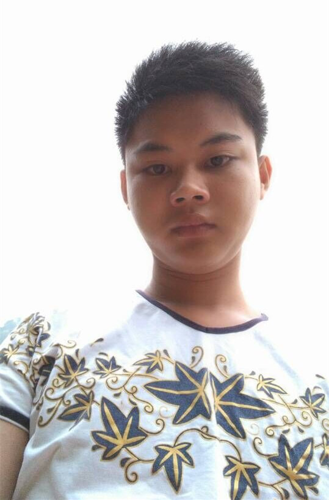
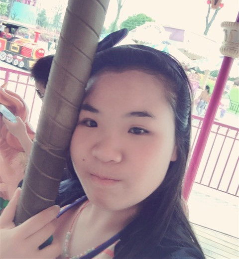
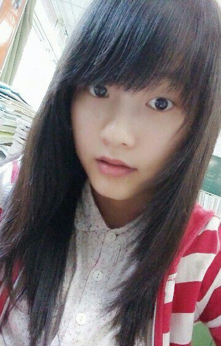
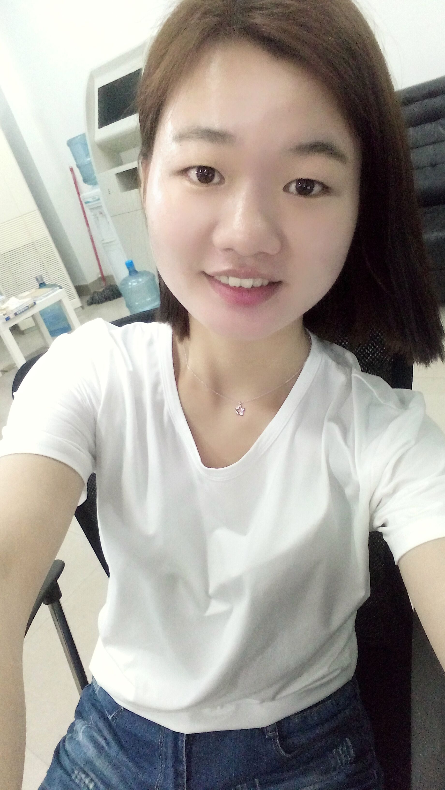
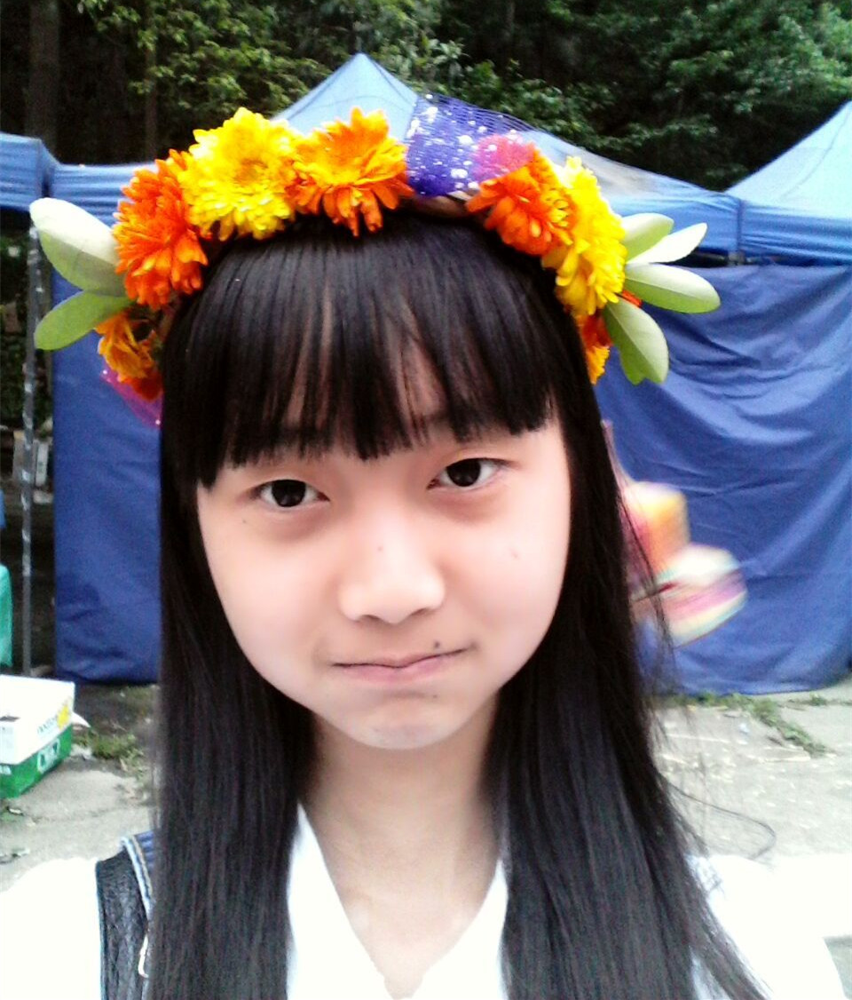

张泽玮 front-end-club创始人（班主任） 这货就是一个逗比，很好相处，是名热爱前端，重视体验的开发者，目前有接近2年的开发经验。前端开发充满挑战性与创造力，也时常与设计师打交道，还需要打造良好的用户体验，很享受这个从0到1、不断打磨产品细节的过程。 list
彭晓清 front-end-club第一期同学  理想中的萌妹子，现实中的女汉子。人生两大爱好，漫画和吃。超级讨厌运动，偏爱旅行。比较喜欢web前端，奈何菜鸟一只，目前正在向高级菜鸟迈进，未来目标：摘掉菜鸟标签。 list
敬倩 front-end-club第一期同学  我是一个热情活泼的女孩子，喜欢结交朋友，目前是一名前端爱好者。前端开发是一项十分有趣的技术，一系列乏味的代码就能创造出生动活泼的画面，很喜欢这个充满了创造力的工作。 list
吴涛 front-end-club第一期同学  慢热型人物，喜欢WEB前端和UI设计，目前正在努力的充实自己，增强自己的能力。喜欢读书和外语。愿意尝试一切自己感兴趣的东西。爱吃也爱减肥，喜欢跑步。喜欢的事情就去做，不喜欢的也不会一直逼迫自己。 list
温云天 front-end-club第一期同学  本人学渣一枚，没有高智商，没有高颜值，唯一让自己欣赏的只有做事锲而不舍的精神。目前正朝着web前端攻城狮的目标不断前进，希望通过自己的努力学习，能够成为一名出色的前端攻城狮。 list
安春生 front-end-club第一期同学  我是一个聪明与帅气并存的有志青年，我总是以饱满的热情去迎接未来。在学习web前端的道路上，我脚踏实地在键盘上去敲打每段记忆。我对生活很乐观，不断向钱看，向厚看。 list
曹哲哲 front-end-club第一期同学  误入IT界的小白，看了各种高大上。十分享受自己做东西的成就感。目前正在专研前端，性子慢热，偶尔文艺，熟悉的人对我的反差很好奇。喜欢动漫、运动和旅行。开始逐渐用ps修照片，前端做心情日志，pr做视频，我最喜欢：自己选的路跪着也要走完。 list
吴艳芳 front-end-club第一期同学  时而活泼开朗时而安静冷淡，善于倾听。喜欢二次元和音乐、喜欢动手做一些小东西，比如橡皮章、风铃之类的，有收集癖。自认为比较适合前端方向，将来会更专注于这方面技能的培养。 list
李艳 front-end-club第一期同学  电信的淑女，爱好前端，对IT行业有极大的兴趣，性格开朗，喜欢文学心理学，讨厌电路和数学。遇到喜欢的东西就会努力去争取，不放过任何一个稍有兴趣的事物。 list
何娟 front-end-club第一期同学  我是一个乐观积极、拥有上进心的学生，并且热爱web前端，喜欢探索新事物。在未来的学习生活中，我会充分了解web前端相关知识，享受学习的过程，让自己的大学生活更加充实，取得更大的进步。 list